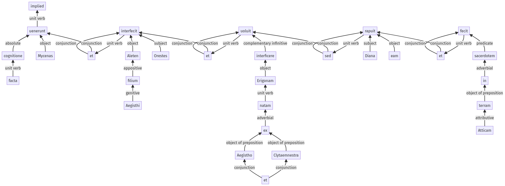

Hyginus, Fabulae, 122a.3.19-122a.3.48a
122a.3.1-122a.3.18a | 122a.4.1-122a.4.12a
Sentence 1209
122a.3.19-122a.3.48a
cognitione itaque facta, Mycenas uenerunt et Aleten Aegisthi filium Orestes interfecit et Erigonam ex Clytaemnestra et Aegistho natam uoluit interficere, sed Diana eam rapuit et in terram Atticam sacerdotem fecit.
2 cognitione facta
1 Mycenas uenerunt
1 et Aleten Aegisthi filium Orestes interfecit
1 et Erigonam
2 ex Clytaemnestra et Aegistho natam
1 uoluit interficere
1 sed Diana eam rapuit
1 et in terram Atticam sacerdotem fecit
cognitione itaque facta, Mycenas uenerunt et Aleten Aegisthi filium Orestes interfecit et Erigonam ex Clytaemnestra et Aegistho natam uoluit interficere, sed Diana eam rapuit et in terram Atticam sacerdotem fecit.
Highlighting:
- connecting words
- unit verb
- subject
- object
Color code:
- independent clause (level 1, transitive verb)
- independent clause (level 1, intransitive verb)
- independent clause (level 1, transitive verb)
- circumstantial participle (level 2, transitive verb)
- circumstantial participle (level 2, transitive verb)
- independent clause (level 1, transitive verb)
- independent clause (level 1, transitive verb)
